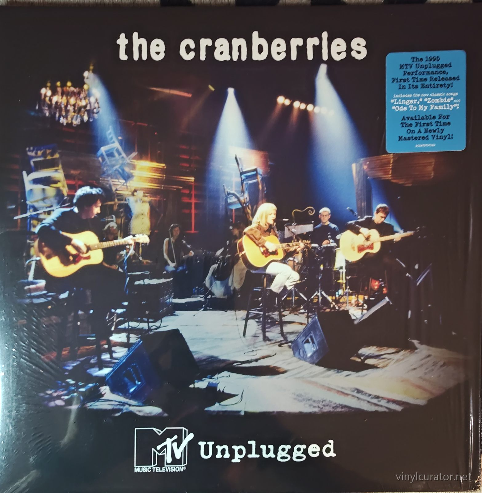
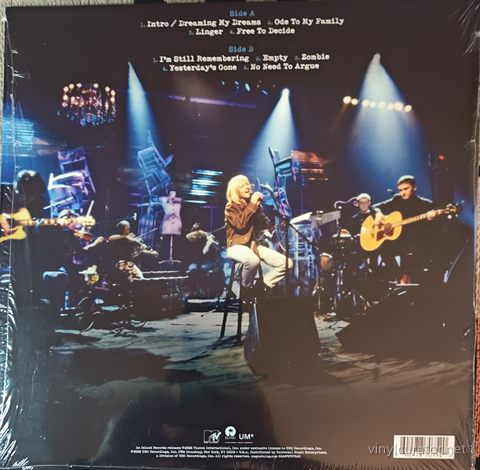
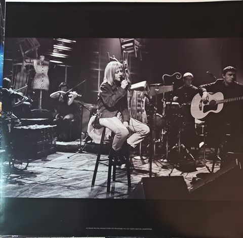
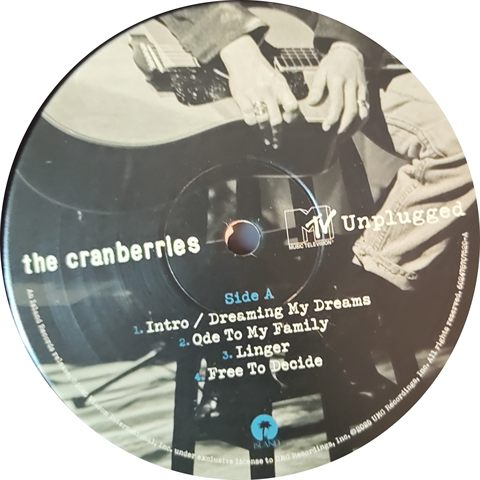
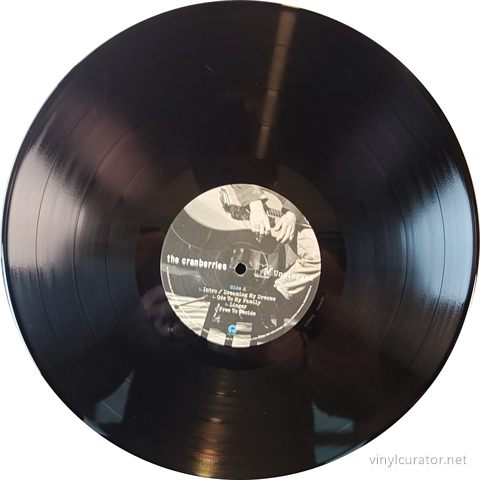
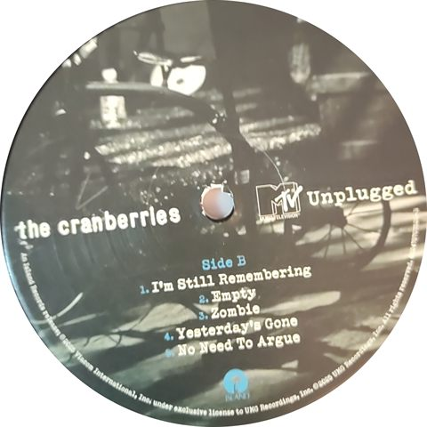
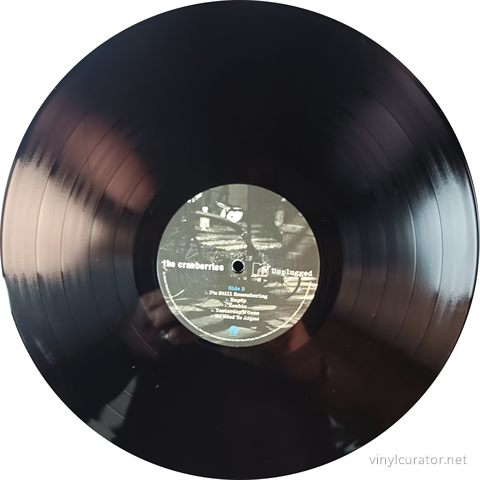

Thank you for buying this record. What follows is its documentation: the
pressing identified, the matrix / runout transcribed by hand from the dead
wax, and the condition as assessed before it was listed. It is yours to keep
with the record.
— Paul, Vinyl Curator
The Cranberries
MTV Unplugged
2025 · Island Records / UMe 602475914693 · Stereo · US (US-market UMe edition; parenthesized GZ Media job numbers in the runout suggest it was pressed by GZ Media, Czech Republic, for the US market - likely) · LP, gatefold · 33 1/3 RPM







Pressing details
Label
Island Records / UMe
Catalogue number
602475914693
Year
2025
Mono / Stereo
Stereo
Country
US (US-market UMe edition; parenthesized GZ Media job numbers in the runout suggest it was pressed by GZ Media, Czech Republic, for the US market - likely)
Format
LP, gatefold
Speed
33 1/3 RPM
Genre
Rock - Alternative Rock / Acoustic
Performer / Orchestra
String quartet (unidentified on jacket; the Unplugged performance featured supplemental strings)
Musicians
Dolores O'Riordan (vocals, guitar), Noel Hogan (guitar), Mike Hogan (bass), Fergal Lawler (drums, percussion), with a string ensemble augmenting the band for the Unplugged arrangements
Matrix / Runout
Side A: 00602475914693E (1295932) 01010107
Side B: 00602475914693F (1295933) 01010301
Condition
Cover
NM GATEFOLD IN SHRINK/NN GATEFOLD IN SHRINK
Vinyl
NN/NM
Variant chronology
2024 - No Need To Argue 30th anniversary super deluxe box set (first vinyl appearance of this performance, box exclusive)
2025 - US standalone black LP, Island/UMe 602475914693, hype sticker 'The 1995 MTV Unplugged Performance, First Time Released In Its Entirety' <- this copy
2025 - US alabaster white LP with alternate cover (retail exclusive)
2025 - Europe black LP, Island/UMe
This Pressing
1st standalone press (stereo, 2025) - US Island/UMe black vinyl edition; GZ Media job numbers in matrix, hype sticker intact in shrink.
The Album
The Cranberries taped their MTV Unplugged set in 1995, at the commercial peak of their second album No Need To Argue, which had made the Limerick band - fronted by the singular voice of Dolores O'Riordan - one of the biggest alternative acts in the world. The acoustic format suited them: O'Riordan's keening, ornamented vocal style carried 'Linger,' 'Ode To My Family' and a hushed, devastating 'Zombie' without the wall of electric guitars, backed by the core band plus strings. Despite the episode's popularity in rotation on MTV, the audio was never officially released, becoming a much-bootlegged fan favorite for three decades. The full nine-song performance finally surfaced in the 2024 No Need To Argue 30th anniversary box set, and this standalone edition followed in November 2025 - part of the archival campaign the surviving members have pursued since O'Riordan's death in January 2018. Critics received it warmly as both a document of the band at its height and a poignant reminder of O'Riordan's gifts, and its acoustic 'Zombie' has been singled out as a definitive reading. It stands as one of the strongest entries in the whole Unplugged catalog and an essential companion to the band's studio work.
Tracklist
Side 1
1. Intro / Dreaming My Dreams
2. Ode To My Family
3. Linger
4. Free To Decide
Side 2
1. I'm Still Remembering
2. Empty
3. Zombie
4. Yesterday's Gone
5. No Need To Argue
The Label
This copy carries the 2025 Island Records/UMe picture labels with the MTV Unplugged logo, Island palm-tree logo at bottom, and rim text crediting Island Records under exclusive license to UMG Recordings, Inc., dated 2025. The back jacket gives the UMe address (2220 Broadway, New York, NY) and 'Distributed by Universal Music Enterprises,' identifying the US-market edition rather than the Europe variant. The typed matrix (00602475914693E/F with parenthesized job numbers 1295932/1295933) follows the numbering convention GZ Media etches on Universal product, indicating a Czech-pressed disc for the US market. The front hype sticker - 'The 1995 MTV Unplugged Performance, First Time Released In Its Entirety... Available For The First Time On A Newly Mastered Vinyl' - matches the standard US black edition, not the alabaster-white alternate-cover exclusive. As the first-ever standalone pressing of this 1995 performance, this copy is by definition the first issue of this title.
Fidelity
Newly mastered for this 2025 release from the archived 1995 MTV broadcast tapes; a modern digital master cut via GZ Media. Early collector reports are mixed: the mastering itself is regarded as clean and full-bodied, but multiple Discogs reviewers note noisy, non-fill-prone surfaces and off-center discs on some copies - typical GZ quality-control variance. As the first and only standalone vinyl cut, it is the fidelity benchmark by default; no audiophile reissue exists yet.
Notes
2025 Island/UMe 602475914693 stereo - first standalone pressing, released November 7, 2025. US edition confirmed by the UMe 2220 Broadway address on the back jacket and the standard black-vinyl hype sticker (not the alabaster-white alternate-cover exclusive). Typed matrix shows GZ Media-style parenthesized job numbers (1295932/1295933), indicating Czech manufacture for the US market. The performance's only earlier vinyl appearance was inside the 2024 No Need To Argue 30th anniversary box set.
Documenting collections
I do this work for other people’s collections too — documenting a
collection record by record, researching individual pressings, and preparing
collections for sale or for insurance. If you have a collection you would like
documented, or a record you want identified properly, get in touch:
email
This record’s page: https://vinylcurator.net/albums/the-cranberries-mtv-unplugged/